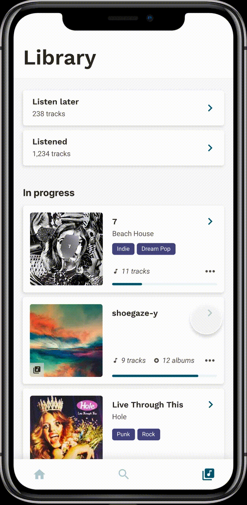

Solution

Save music to listen to later
Save new and interesting music into a 'Listen later' list. Organize music into categorized folders with other new finds.

Rediscover new music that was previously saved
Search and filter from music saved into ‘Listen later’ to rediscover music that fits the current mood and interested genres.

Track listening progress on collections and albums
Motivate users to listen to more music with a visual representation of listening progress.